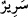
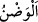
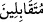
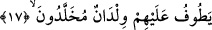
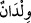

ve sıfâtın cüz’î tecelliyâtının sâhiblerinin ve karanlık nefsânî lezzetlerin sâhiplerinin
çokluğuna işâret edilir. “Birazı da, (Muhammedî olan) sonrakilerden” âyet-i
kerîmesiyle de îtibârî sıfât ve esmânın çokluğuna rağmen kudsî zâtî tecellîlerin sahibleri
olan zâhir ruh sâhiplerinin çokluğuna işâret edilir.
15. Cevherlerle işlenmiş tahtlar üzerindedir.
Bu cümle, “mukarrebûn” kelimesinden ikinci haldir. __WORD__ (sürûr) kelimesi, “taht”
mânâsına gelen
(serîr) kelimesinin çoğuludur. Âyet-i kerîmede geçen
(mevdûne) kelimesi, “yâkût ve inciyle işlenmiş, altınla örülmüş” demektir. Veya “zırh
örgüsü” anlamındaki __WORD__ (vadn) kökünden alınmış olup “yakın ve bitişik dizilmiş”
demektir. Sonra, sağlam dokunmuş bütün dokumalar için istiâre yoluyla kullanılmıştır.
16. Karşılıklı olarak oturup yaslanırlar.
Bu cümle, cevherlerle işlenmiş tahtlar üzerinde bulunanların iki hâlini dile
getirmektedir. Ayetteki
(mütekabilîn) kelimesinin türediği “tekâbül” masdarı,
onların birbirlerine karşı ya bizzat bedenleriyle veya inâyet ve muhabbetle dönüp
yönelmelerini ifâde eder. Yâni onlar, tahtlarına kurulmuş veya yaslanıp, birbirinin
ensesinden bakmayacak şekilde istirahat için oturmuş olan hükümdarların oturuşu gibi
oturmuşlardır. Bu ifâde, onların aynı zamanda birbirlerine ne kadar güzel
davrandıklarını, güzel ahlâk ve edeb sâhibi olduklarını anlatmaktadır.
Ebu’l-Leys, bu âyetin tefsiriyle ilgili olarak “onlar, birbirlerini karşılıklı olarak
ziyaret ederler” demiştir.
Kâşifî şöyle demiştir: Birbiriyle beraber, yâni yüz yüze birbirini görmekle ünsiyet
bulur ve mesrûr olurlar.”
17. Çevrelerinde, (hizmet için) ölümsüz gençler dolaşır;
Yerken, içerken ve başka faaliyetlerde bulunurken “çevrelerinde (hizmet için)
ölümsüz gençler dolaşır.” Âyette geçen
(vildân) kelimesi, “hizmet eden genç”